이 글은 AI(Chat GPT 4o)로 작성하고, 일부 덧붙여 썼습니다😁
2024년 10월에 먹으러 갔습니다😄나하시 아사토에 있는 사카에마치 시장의 '차루 소바'에 다녀왔어요!✨오랜만의 사카에마치 시장은 낮의 고요함이 인상적. 밤의 북적임을 떠올리면, 낮의 분위기는 마치 다른 세상 같네요. 그런 평온한 분위기 속에서 오키나와 소바를 즐기는 것도 또 하나의 사치입니다🍜.
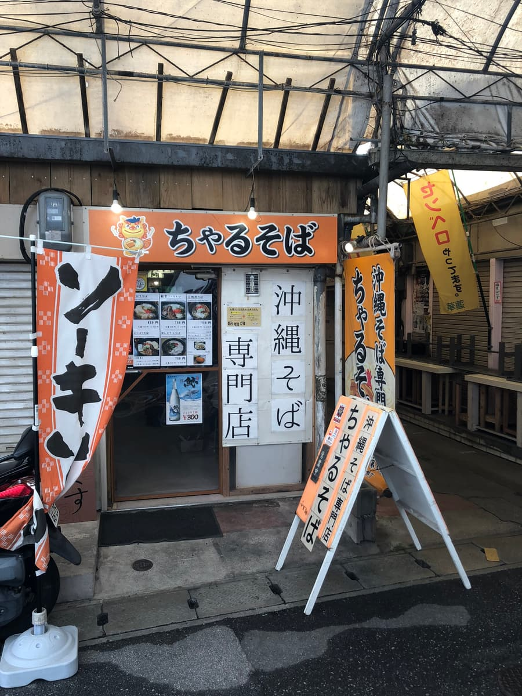
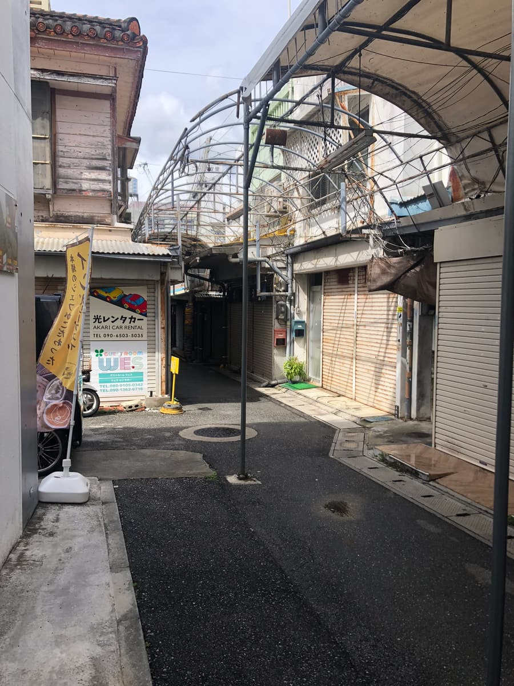
시장 안의 좁은 골목을 걸어가면, '차루 소바'의 노렌(가게 천 간판)이 눈에 들어옵니다. 외관은 어딘가 그립고, 지역 밀착형 가게라는 느낌이 전해집니다. 오렌지색 간판과 시장의 레트로한 분위기가 어우러져, 기대감이 점점 높아지네요🌟.
가게 안에 들어가면, 목재를 기조로 한 따뜻한 공간이 펼쳐집니다. 벽에는 메뉴와 유명인의 사인이 장식되어 있어서, 오키나와다운 가정적인 분위기에 둘러싸여 있습니다. 테이블과 의자는 어딘가 그리운 학교 교실을 떠올리게 하는 디자인으로, 앉으면 한숨 돌릴 수 있는 느낌이 들었습니다🍃.
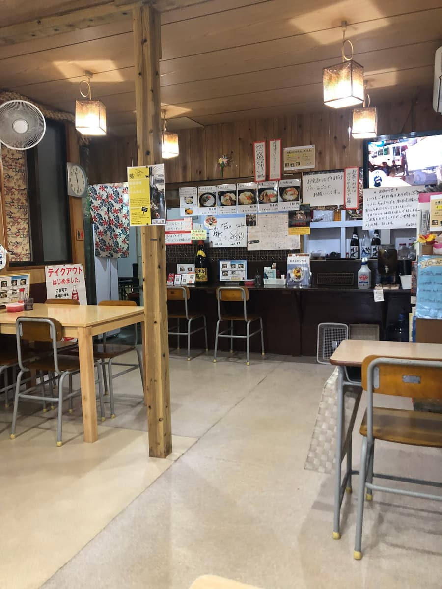
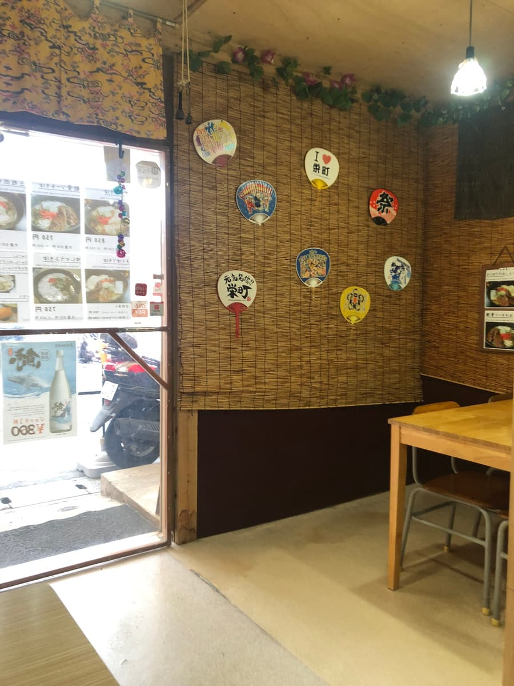
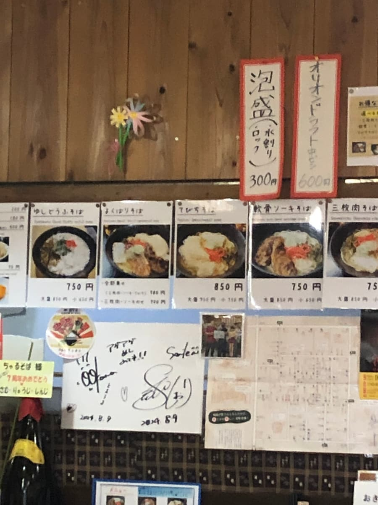
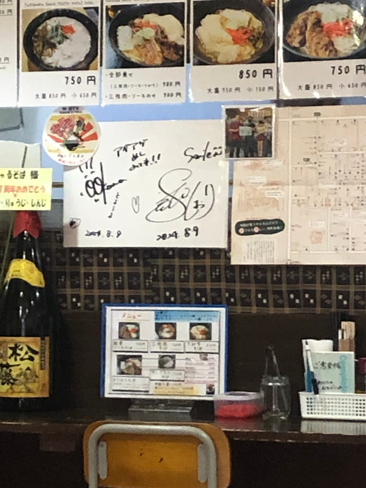
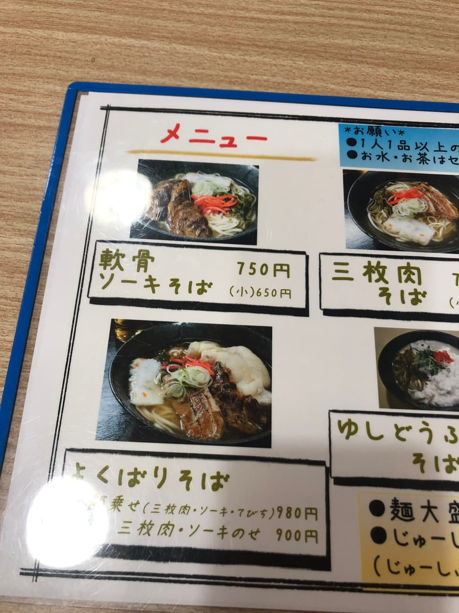
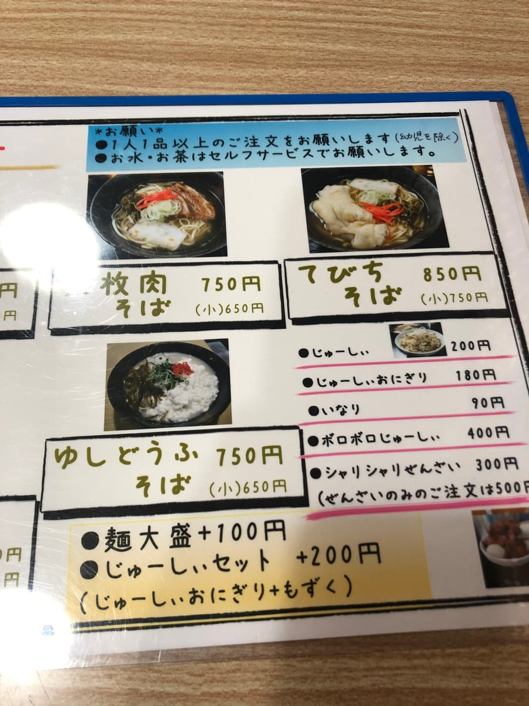
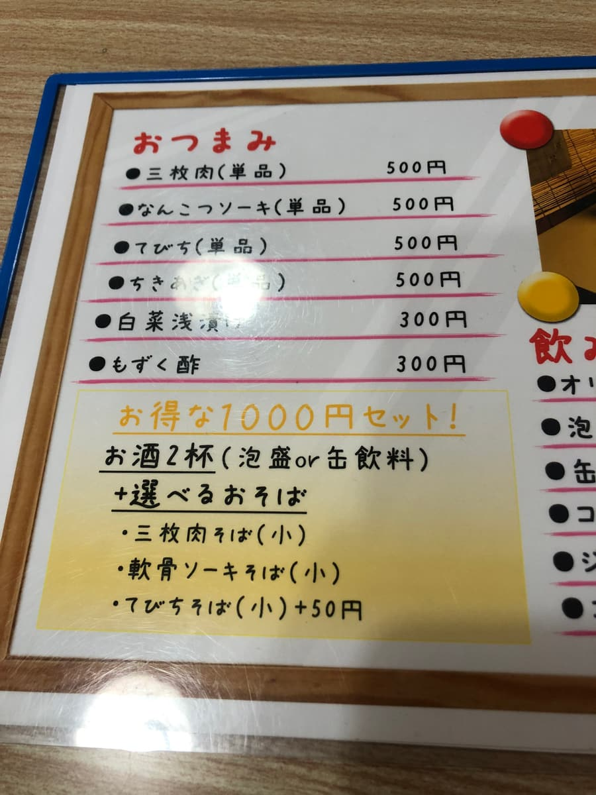
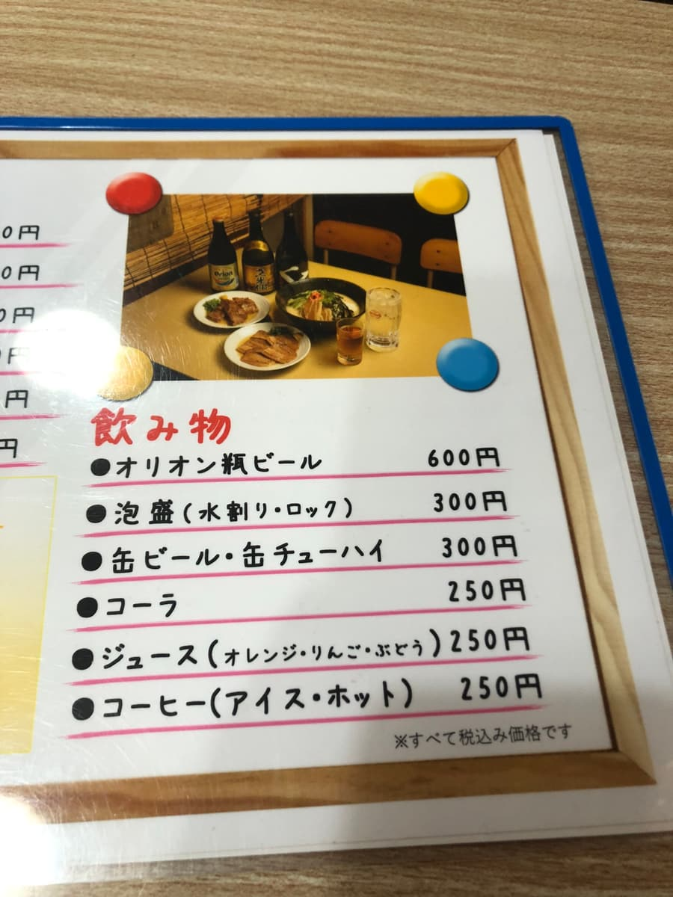
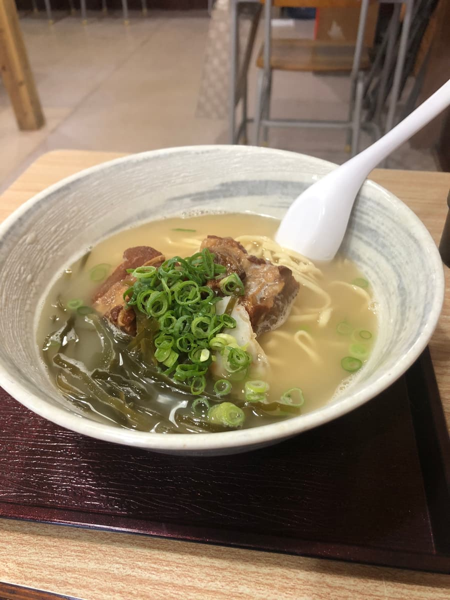
이번에 주문한 것은 '난코츠 소키 소바'(750엔). 오키나와 소바 중에서도 인기 있는 메뉴죠! 나온 소바는 심플하면서도 아름다운 담음새로, 보기만 해도 맛있어 보입니다.
국물을 한 모금 마셔 보니, 가쓰오 육수의 순한 풍미가 퍼집니다.
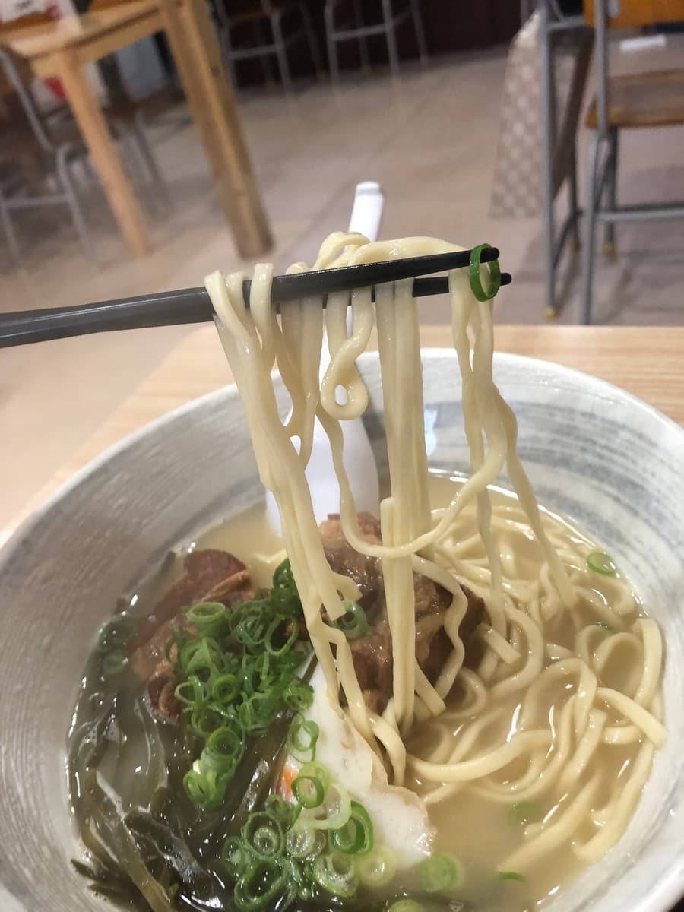
면은 중간보다 가는 스트레이트 타입으로 부드러운 편으로 마무리되어 있습니다. 탄력은 그다지 강하지 않지만, 국물과 잘 어우러져 입안에서 일체감을 즐길 수 있습니다. 이 부드러움이 오키나와 소바답다고도 할 수 있지만, 식감에 조금만 변화가 있으면 더 좋겠다고 생각했습니다🤔.
연골 돼지갈비(난코츠 소키)는 부드럽지만, 부분적으로 힘줄 같은 질긴 식감이 남아 있는 곳도 있었습니다. 그래도 전체적으로는 간이 확실하게 되어 있어서, 국물이나 면과의 궁합도 좋았습니다. 곁들여진 송송 썬 파와 다시마도 적당한 포인트가 되어 주었습니다.
시장 안에서 먹는 오키나와 소바는 역시 각별합니다. 낮의 조용한 분위기에 둘러싸여, 현지 사람들 사이에 섞여 먹는 소바는 뭐라 말할 수 없는 특별함이 있습니다. 이 레트로한 시장 풍경과 오키나와 소바의 조합은 관광객에게도 현지인에게도 추천할 수 있는 경험입니다🌿.
평가(9점/15점): 종합적으로는 '무난하게 맛있다'는 인상이었지만, 역시 시장의 분위기와 함께 즐김으로써 이 한 그릇이 더욱 매력적으로 느껴지는 것 같습니다🎵. 특별한 화려함이 아니라, 어딘가 마음이 놓이는 가정적인 맛이 매력이네요🌺
면: ★★★☆☆（3）
수프: ★★★☆☆（3）
토핑: ★★★☆☆（3）